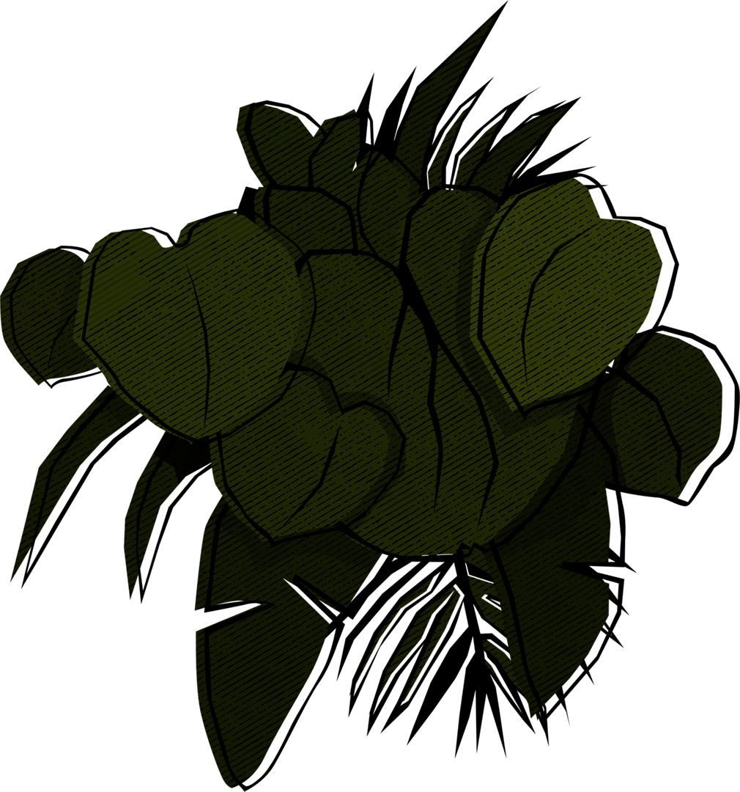
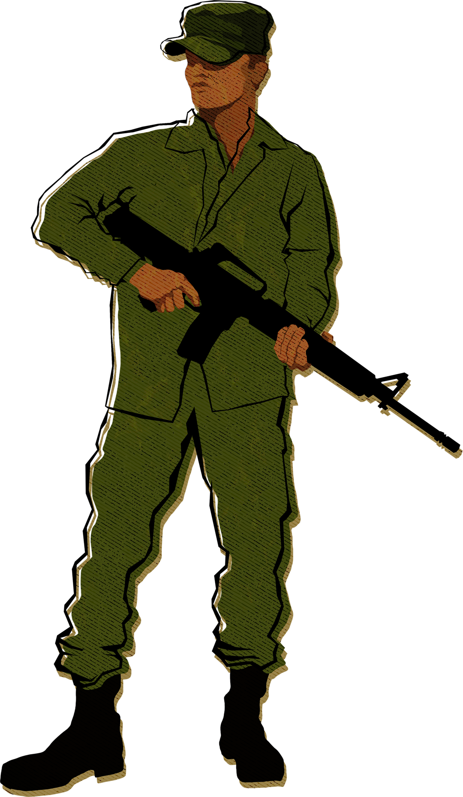
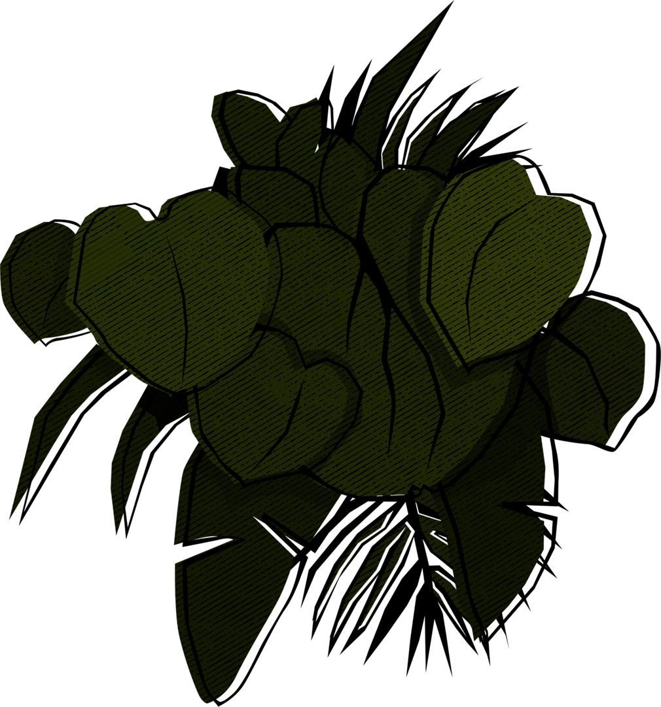
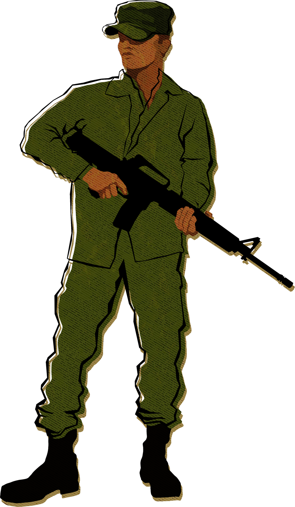
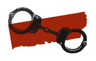

Entre mayo de 2022 y julio de 2023, nuestro equipo –integrado por 37 periodistas y profesionales de los medios de 11 países– se aventuró a recorrer rincones poco explorados de la Amazonía para entender su ecosistema criminal.
Pasamos un año investigando este intrincado mundo y pudimos obtener información sobre las fuerzas que impulsan a los protagonistas del proyecto Amazon Underworld (El Submundo de la Amazonía) a participar en actividades ilícitas que tienen un impacto devastador en las comunidades amazónicas y en el medio ambiente.
Amazon Underworld presenta una base de datos que nos permitió mapear la presencia de grupos armados en las fronteras amazónicas de los países y una serie de reportajes sobre las actividades de las organizaciones criminales que operan en la región, muchas de las cuales han recibido poca o ninguna atención mediática.
PRESENCIA DEL CRIMEN ORGANIZADO Y GRUPOS ARMADOS
Para construir esta base de datos consultamos fuentes primarias y documentos en todos los municipios fronterizos amazónicos de Brasil, Colombia, Venezuela, Perú, Ecuador y Bolivia.